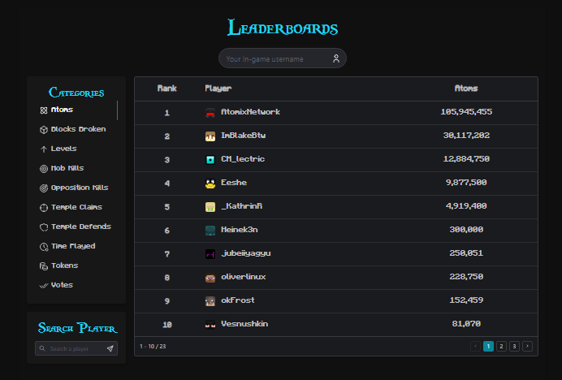

Breeding Competition on Atomix
- By nature, Atomix is a competitive server with a heavy emphasis placed on player achievement and rivalry.
- The purpose of the web leaderboards was to further emphasize that competition and encourage players to get on their grind and climb the rankings.
- Through the collaboration with a freelancing web developer, we successfully developed a variety of leaderboards that encompassed 10 stats that players could compete on.
- These leaderboards successfully broke down stats into hourly, daily, weekly, and monthly timeframes by linking to our leaderboards software and utilizing an API.
